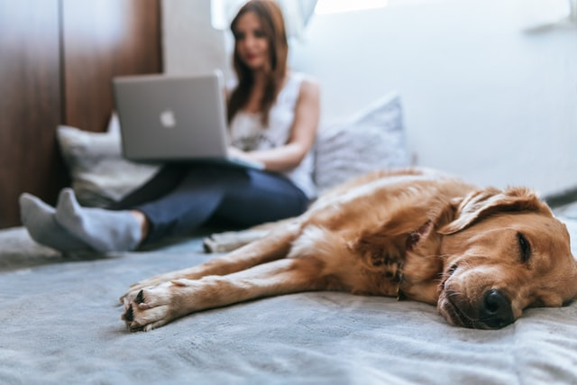

Bienvenido a nuestra pagina de adopcion de mascotas.
Esperamos encuentre la mascota ideal para ti y tu familia.
¡Adopta!¿Porqué es importante adoptar?
Es importante para que no hayan mas mascotas sin hogar y ayudar que no hayan mas mascotas abandonadas y con tu ayuda poder cambiar la vida de miles de animales en Colombia que han sufrido maltrato, abando e indiferencias.
Nuestras mascotas
Los animales son la mejor compañia para nosotros
Las mascotas necesitan cariño
¿Quienes somos?
Objetivos
The family pets es una pagina web que se creo con el objetivo de brindarte información que concientice y haga un llamado a todas las personas en el cuidado de los animales, además brinda la opción de adoptar mascotas que estan abandonadas y encuentren un hogar amoroso.
Vision
Es respecto al rescate, la rehabilitación y adopción de mascotas abandonadas, así como contribuir con información que ayude a la construcción de una sociedad con más educación, conciencia y respeto para estos animales.
Mision
Es respecto al rescate, la rehabilitación y adopción de mascotas abandonadas, así como contribuir con información que ayude a la construcción de una sociedad con más educación, conciencia y respeto para estos animales.
Valores
Para nosotros es importante que no haya mas mascotas en las calles y tengan un hogar o una nueva oportunidad.

Rocky

Bruno

Max
